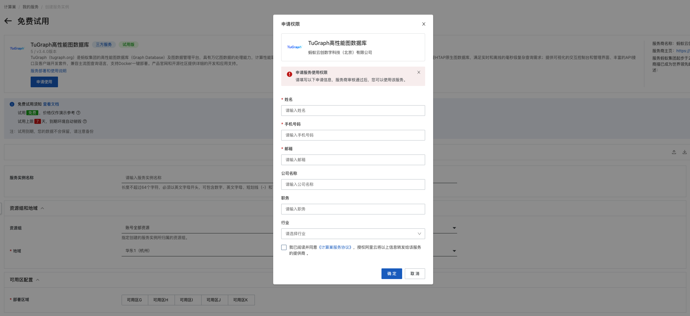

TuGraph服务实例部署文档
概述
TuGraph（tugraph.tech）是蚂蚁集团的高性能图数据库（Graph Database）。TuGraph在计算巢上提供了社区版服务，您无需自行购置云主机，即可在计算巢上快速部署TuGraph服务、实现运维监控，从而搭建您自己的图应用。本文向您介绍如何开通计算巢上的TuGraph社区版服务，以及部署流程和使用说明。
目前TuGraph处于免费试用阶段，欢迎大家申请试用，期间发现任何问题也欢迎反馈交流。
实例说明
TuGraph部署的为社区开源版本，源码参考Github Repo，目前可以选择的实例规格如下：
| 规格族 | vCPU与内存 | 系统盘 | 公网带宽 |
|---|---|---|---|
| ecs.r7a.xlarge | AMD 内存型 r7a，4vCPU 32GiB | ESSD云盘 200GiB PL0 | 固定带宽1Mbps |
| ecs.r6.xlarge | 内存型r6，4vCPU 32GiB | ESSD云盘 200GiB PL0 | 固定带宽1Mbps |
预估费用在创建实例时可实时看到（目前为免费）。 如需更多规格、其他服务（如集群高可用性要求、企业级支持服务等），请联系我们 tugraph@service.alipay.com。
部署流程
0. 准备工作
在正式开始使用前，您需要一个阿里云账号，对ECS、VPC等资源进行访问和创建操作。
- 若您使用个人账号，可以直接创建服务实例
- 若您使用RAM用户创建服务实例，且是第一次使用阿里云计算巢
- 需要在创建服务实例前，对使用的RAM用户的账号添加相应资源的权限。添加RAM权限的详细操作，请参见为RAM用户授 权。所需权限如下表所示。
- 且需要授权创建关联角色，参考下图，选中 同意授权并创建关联角色
| 权限策略名称 | 备注 |
|---|---|
| AliyunECSFullAccess | 管理云服务器服务（ECS）的权限 |
| AliyunVPCFullAccess | 管理专有网络（VPC）的权限 |
| AliyunROSFullAccess | 管理资源编排服务（ROS）的权限 |
| AliyunComputeNestUserFullAccess | 管理计算巢服务（ComputeNest）的用户侧权限 |
| AliyunCloudMonitorFullAccess | 管理云监控（CloudMonitor）的权限 |
1. 部署入口
您可以在阿里云计算巢自行搜索，也可以通过下述部署链接快速到达。
2. 申请试用
在正式试用前，需要申请试用，按照提示填写信息，在审核通过后就可以创建TuGraph服务。

3. 创建TuGraph服务
3.1 参数列表
您在创建服务实例的过程中，需要配置服务实例信息的参数列表，具体如下。
| 参数组 | 参数项 | 示例 | 说明 |
|---|---|---|---|
| 服务实例名称 | N/A | test | 实例的名称 |
| 地域 | N/A | 华东1（杭州） | 选中服务实例的地域，建议就近选中，以获取更好的网络延时。 |
| 付费类型配置 | 付费类型 | 按量付费 | 免费使用请选用按量付费 |
| 可用区配置 | 部署区域 | 可用区I | 地域下的不同可用区域，确保实例非空 |
| 选择已有基础资源配置 | VPC ID | vpc-xxx | 按实际情况，选择专有网络的ID。 |
| 选择已有基础资源配置 | 交换机ID | vsw-xxx | 按实际情况，选择交换机ID。若找不到交换机, 可尝试切换地域和可用区 |
| ECS实例配置 | 实例类型 | ecs.r6.xlarge | 当前支持ecs.r6.xlarge和ecs.r7a.xlarge规格 |
| ECS实例配置 | 实例密码 | ** | 设置实例密码。长度8~30个字符，必须包含三项（大写字母、小写字母、数字、 ()`~!@#$%^&*_-+={}[]:;'<>,.?/ 中的特殊符号）。 |
3.2 具体步骤
创建服务按如下步骤进行，参考下图：
- 创建实例名称，如下图中“test”
- 选择地域，如下图中“华东1（杭州）”

- 选择实例类型，当前支持2个套餐的免费试用（自定义套餐不支持试用）
- 套餐一：ecs.r6.xlarge
- 套餐二：ecs.r7a.xlarge
- 配置实例的密码
- 选择部署区域，如下图中“可用区I”
- 点击下一步，进入订单确认页面
- 勾选“权限确认”和“服务条款”中的复选框
- 点击左下角绿色背景的开始免费试用，即可创建服务实例
4. 启动TuGraph服务
- 查看服务实例：服务实例创建成功后，部署时间大约需要2分钟。部署完成后，页面上可以看到对应的服务实例，如下图

- 点击该服务实例访问TuGraph。进入到对应的服务实例后，可以在页面上获取到web、rpc、ssh、bolt共4种使用方式，并且页面上展示了admin用户的密码，其中bolt字段和密码在登陆时需要用到。
- 点击web的链接，即可跳转访问已经部署好的TuGraph Web。建议新手先通过TuGraph Web，快速使用demo上手。
- 首先在TuGraph Web的登录页面上，输入bolt字段、默认用户名admin和页面上展示的admin用户的密码进行登录。参考下图
- 登录后，点击“新建图项目”可以选择创建一个空白图或选择预置数据的图项目，如“电影”、“三国演义”、“三体”和“流浪地球”。开始探索和发现丰富的图数据吧！
更多功能请参考TuGraph使用文档
常见问题FAQ
问题一：部署区域无可用资源
有时，所选部署区域（如可用区G）没有所选套餐的可用资源，会报错如下图所示

解决办法：尝试选择其他区域，如可用区I等
问题二: 启动后web访问不通
web的启动需要一点点时间，请稍后刷新页面即可。
问题三: 登录时的用户名密码不正确
请注意检查，登录时使用的密码应为详情页面展示的密码。
联系我们
- TuGraph官网：https://tugraph.tech/
- 社区版开源地址：https://github.com/TuGraph-family/tugraph-db
- 联系邮箱：tugraph@service.alipay.com
- 快速问题排查：Github Discussion，也可以通过技术交流群 和我们进行联系，详见下面二维码。
TuGraph钉钉交流群：
TuGraph微信交流群：
扫码关注微信公众号，技术博客、活动通知不容错过：

© 2009-2022 Aliyun.com 版权所有